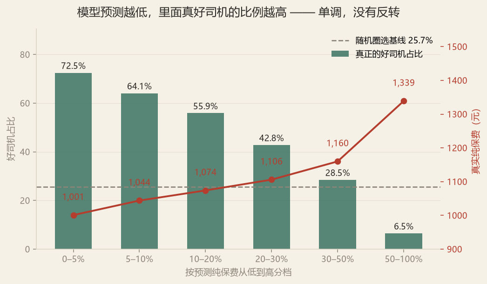
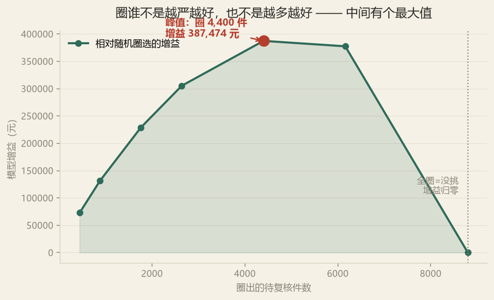

业务账与圈选阈值
指标是模型的事，决策是业务的事。这一页回答老板真正会问的问题： 模型圈出来的人，怎么用？圈多少？值多少钱？
圈谁去复核最划算？圈太少漏掉利润，圈太多白花人工——中间有个最优点。
先立规矩：什么口径下才叫「赚钱」
假设年保费 3,000 元、综合成本率 75%。第一个坑就在这里： 综合成本率已经把预期赔款算进去了，所以毛利的正确口径是增量：
分档体检：模型排的序到底有没有含金量
| 档位（按预测从低到高） | 件数 | 真实均值 | 好司机占比 | 单均毛利（元） |
|---|---|---|---|---|
| 最低 0%–5% | 440 | 1,001 | 72.5% | 2,249 |
| 最低 5%–10% | 440 | 1,044 | 64.1% | 2,217 |
| 最低 10%–20% | 880 | 1,074 | 55.9% | 2,194 |
| 最低 20%–30% | 880 | 1,106 | 42.8% | 2,170 |
| 最低 30%–50% | 1,760 | 1,160 | 28.5% | 2,130 |
| 最低 50%–100% | 4,400 | 1,339 | 6.5% | 1,995 |

圈谁：把人工复核当投资来算
假设每件复核成本 40 元（0.5 小时 × 80 元/小时）。同一个人工预算， 投给多少人、投给谁，收益完全不同：
| 预测阈值（元） | 圈出件数 | 圈内真实均值 | 相对随机的增益（元） |
|---|---|---|---|
| 1,018 | 440 | 1,001 | 72,823 |
| 1,108 | 880 | 1,023 | 131,529 |
| 1,231 | 1,760 | 1,048 | 229,054 |
| 1,335 | 2,640 | 1,068 | 305,376 |
| 1,538 | 4,400 | 1,105 | 387,474 |
| 1,793 | 6,160 | 1,140 | 377,592 |
| 5,028 | 8,800 | 1,222 | 0 |
「相对随机的增益」这一列，是怎么算出来的
上面那张表最后一列是本库的核心数字，但它是怎么来的、为什么这么定义，值得拆开看一遍。 先说白话：它不是模型「多赚了多少保费」，而是同一笔人工预算， 模型挑的人比闭着眼随机挑的人，少赔了多少钱。
你有 4,400 个复核名额。给谁？给模型挑的那 4,400 个，还是抽签抽 4,400 个？ 两种做法都要花一样的 4,400 次人工。差额，就是模型值多少钱。 不这么比的话，你会把「保费规模本来就大」误算成模型的功劳。
展开：这个数就是这么乘出来的
= n × COR × ( t̄ − t_model )
把同一个 n 件预算花两遍。第一遍让模型挑，赚 n×(保费 − COR×模型圈内的真实均赔)；第二遍闭眼随机挑，赚 n×(保费 − COR×全体拒保件的真实均赔)。两个相减，保费项完全一样，被抵消掉了。
n— 这一档圈出的件数（如峰值 4,400 件）PREM— 单件年保费 3,000 元COR— 赔款占保费的比例 0.75（综合成本率里的赔付部分）t_model— 模型挑出的这 n 人的真实均赔（如峰值 1,105 元）t̄— 全体 8,800 件拒保的真实均赔 1,222 元——随机挑一件就是这个数
把峰值代进去：4,400 × 0.75 × (1,222 − 1,105) ≈ 386,100 元，与库里的 387,474 元一致（差的那一点来自真实均值取整到 1 元）。
注意减号两边那个 PREM，它被完全约掉了。这不是巧合，是这套算法的要害：
换个视角：把每个人的贡献一个个加起来
也就是说，每个人对这笔账的贡献，只取决于他真实赔款比「随机那个人」低多少：
| 被圈的这个人 | 他的真实赔款 | 相对随机的差 | 他的贡献（元） | 判断 |
|---|---|---|---|---|
| 被错杀的好司机（本库的主角） | 972 | +250 | +187.5 | 该圈：他比随机好 |
| 拒保人群的平均水平（随机挑一个） | 1,222 | +0 | +0.0 | 圈不圈都一样 |
| 确实高风险的（规则没冤枉他） | 1,500 | -278 | -208.5 | 不该圈：圈他反而亏 |
由此可以推出「最优圈选」在理论上是什么：只圈真实赔款低于 t̄ = 1,222 元的人， 一个都别多圈。可惜这在现实里做不到——被拒保的人没有理赔记录，ti 恰恰是观测不到的那个数 （这正是第 29 页选择偏差的根源）。所以只能用预测值 pred 排序去近似它。 而预测是有噪声的：圈得越靠后，预测越接近瞎猜，就越接近随机，贡献就越接近 0。 增益曲线为什么是个倒 U？根就在这里——不是什么玄学，是噪声吃掉了模型的排序优势。
照着本库的数，把整条曲线重算一遍
| 圈选分位 | 件数 n | 圈内真实均赔 | 单件比随机低 | 单件贡献 | 重算：n×COR×差 | 库里的值 |
|---|---|---|---|---|---|---|
| 5% | 440 | 1,001 | 221 | 165.8 | 72,930 | 72,823 |
| 10% | 880 | 1,023 | 199 | 149.2 | 131,340 | 131,529 |
| 20% | 1,760 | 1,048 | 174 | 130.5 | 229,680 | 229,054 |
| 30% | 2,640 | 1,068 | 154 | 115.5 | 304,920 | 305,376 |
| 50% | 4,400 | 1,105 | 117 | 87.8 | 386,100 | 387,474 |
| 70% | 6,160 | 1,140 | 82 | 61.5 | 378,840 | 377,592 |
| 100% | 8,800 | 1,222 | 0 | 0.0 | 0 | 0 |
两股力量方向相反、相乘才有峰值：件数 n 一路在涨，单件贡献一路在跌 （165.8 → 87.8 → 0）。前半段「人多」盖过了「薄」，后半段「薄」盖过了「人多」，于是成倒 U。 把这个表复制进 Excel、换成自己的数就能直接用。
代码就两处（点开是新窗口、带行号）： 保费与成本率常数L281 和 扫阈值算增益L356–372。 后面那段就干一件事：先算随机基准的单件毛利，再算模型圈出的单件毛利， 相减乘件数，七个分位扫一遍取最大。

三个决策要点：
一，最优阈值不是「最严」。圈 440 件（最严）增益只有 72,823 元， 不到峰值的两成。排序好的模型值得用足，不是惜用。
二，也不是「全圈」。圈满 8,800 件等于没有圈，增益归零——人工成本白花， 模型的价值被自己的滥用清空。
三，峰值附近其实很平。圈 4,400 到 6,160 件增益几乎不变（387,474 vs 377,592）。 实务含义：不必纠结精确的最优点，落在平台上就行——这给了落地试错的空间。
模型负责把人从便宜到贵排成一队，业务决定队伍里往前数多少个。 倒 U 曲线告诉你：这个数既不是 0 也不是全部，中间有个最划算的位置。
「模型圈了多少人」不是 KPI，「每元复核成本换回多少毛利」才是。 本案例峰值处 1 元复核成本约换回 2 元毛利—— 这类「性价比」数字应当出现在每一次模型汇报的第一页，AUC 反而该往后放。
本库全部结论由
ai-kb/code 中的模拟数据与手写模型产生，数字统一来自 out/facts.json（三个动画的数字来自 out/anim_facts.json，由 node code/_animfacts.js 复算），可一键复现。看不懂的词见 术语表 · 想看源代码代码入口 · 读完还是飘？看 一页讲清楚 · 关于这个库 · 关于西红精算 · 知识星球：用数据看保险的精算师们